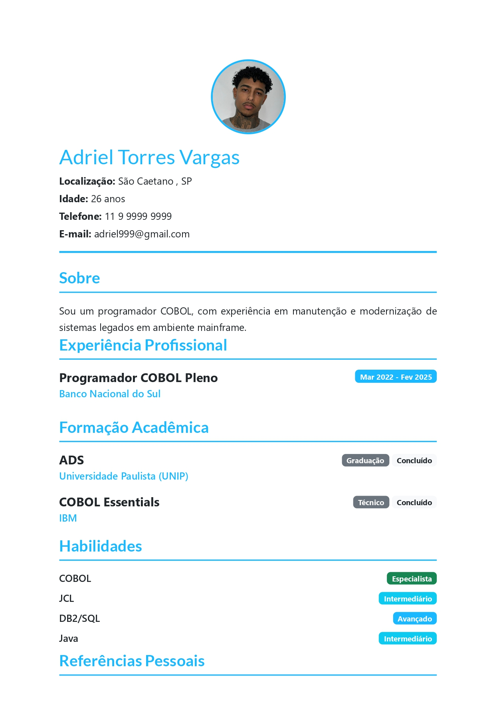
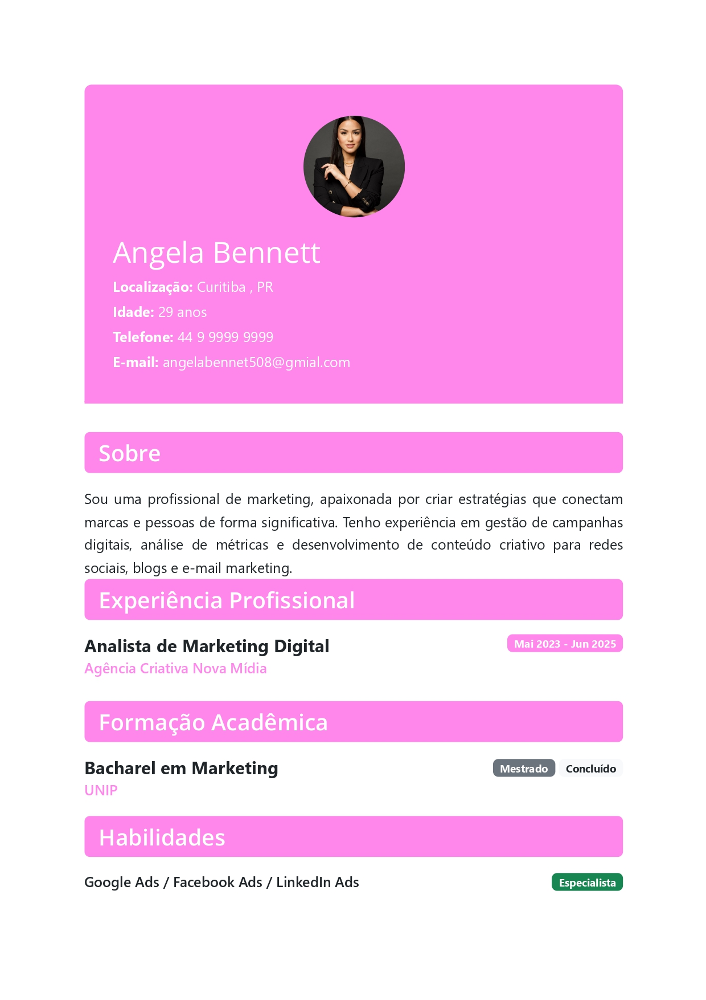

Modelos de Exemplo
Inspire-se com estes currículos profissionais
Tecnologia

Desenvolvedor
Modelo ideal para profissionais de TI, programadores e desenvolvedores. Layout moderno com foco em habilidades técnicas.
- Seção para linguagens de programação
- Destaque para projetos e repositórios
- Design clean e profissional
- Foco em habilidades técnicas
Marketing

Especialista em Marketing Digital
Perfeito para profissionais de marketing, mídias sociais e estratégias digitais. Design criativo e impactante.
- Destaque para campanhas e métricas
- Seção para certificações digitais
- Layout criativo e moderno
- Foco em resultados e KPIs
Administração

Coordenador Administrativo
Modelo clássico e profissional para cargos administrativos, gestão e coordenação. Elegante e formal.
- Layout tradicional e profissional
- Destaque para experiência gerencial
- Seção para conquistas e metas
- Design elegante e formal
Pronto para Criar Seu Currículo?
Personalize completamente o design, cores e layout do seu currículo em poucos minutos.
Começar Agora Ver Tutorial